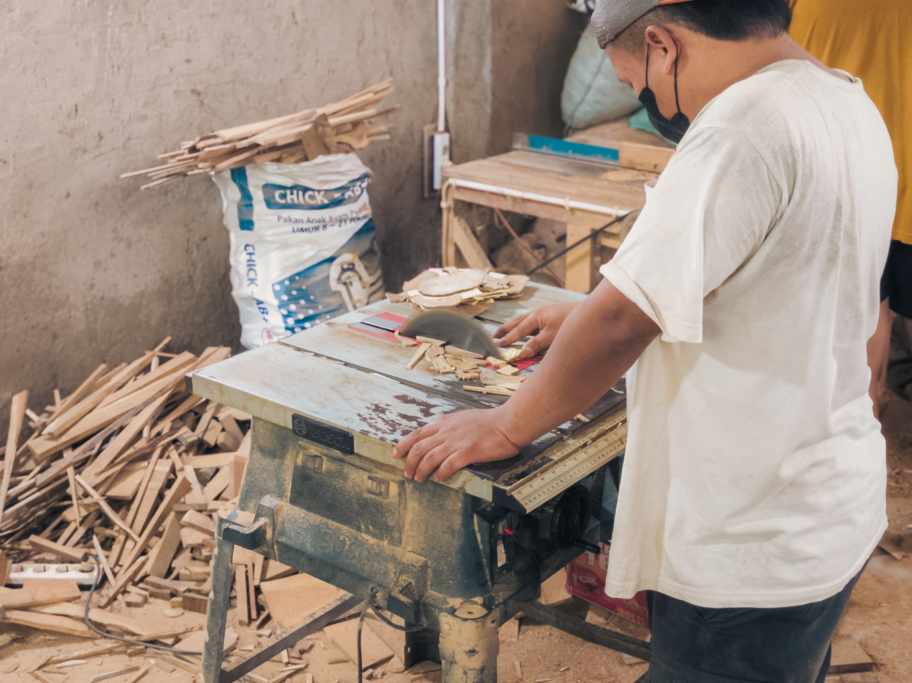

Seleksi Bahan Baku
Memilih potongan limbah kayu jati dengan karakter serat dan kepadatan yang sesuai untuk konstruksi produk.
Potongan limbah kayu jati dari kawasan Alas Roban menyimpan guratan serat, mata kayu, dan kontur alami yang tidak dapat direplikasi oleh mesin massal. Di workshop Bjo Furface yang berlokasi di Desa Kemiri Barat, Subah, material tersebut dipilih dan diolah kembali menjadi ragam produk kriya seperti tas kayu, jam tangan, jam dinding, hingga peralatan saji dapur.
Setiap perpaduan kayu jati dan resin menghasilkan pola visual yang berdiri sendiri untuk masing-masing unit yang selesai diproduksi.
Memilih potongan limbah kayu jati dengan karakter serat dan kepadatan yang sesuai untuk konstruksi produk.

Kayu dipotong sesuai ukuran pola tas, panel jam, maupun peralatan saji secara presisi di workshop.

Komponen kayu dirakit bersama elemen resin dan perangkat pendukung hingga membentuk struktur utuh.

Permukaan diamplas bertahap dan dipoles hingga serat kayu jati serta kejernihan resin tampil optimal.
“One Product For One Person”
Setiap karya membawa karakter motif yang hadir hanya satu kali untuk pemiliknya.
Jelajahi Katalog Produk